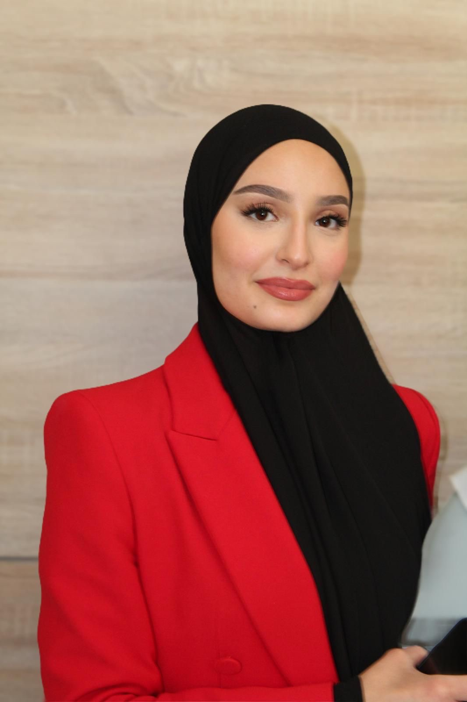

Je m'appelle Mariam Dadaeva et je suis en BTS SIO option SISR au Pôle formation UIMM Alsace à Strasbourg.
Je m’intéresse aux technologies, et notamment aux réseaux et à l’infrastructure, ainsi qu’à la cybersécurité. En parallèle, j’ai développé des compétences en développement web (HTML, CSS, JavaScript, Next.js) et je versionne mes projets avec Git et GitHub.
En dehors de l’informatique, je suis passionnée par l’histoire, la psychologie et les sciences de la vie et de la Terre. J’ai aussi une forte sensibilité artistique : j’aime les belles choses et la mode, je pratique le dessin et j’aime beaucoup la lecture. Ces centres d’intérêt nourrissent ma curiosité, ma créativité et mon sens du détail.